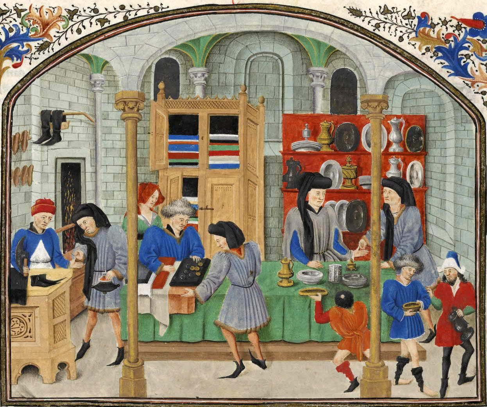
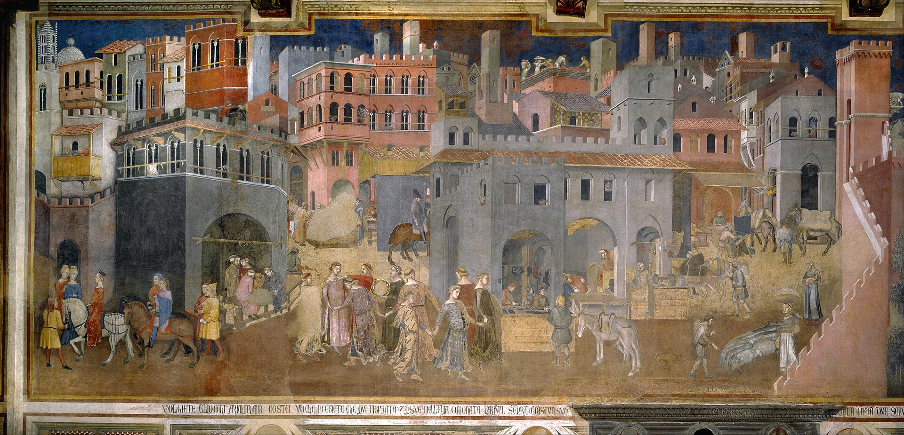
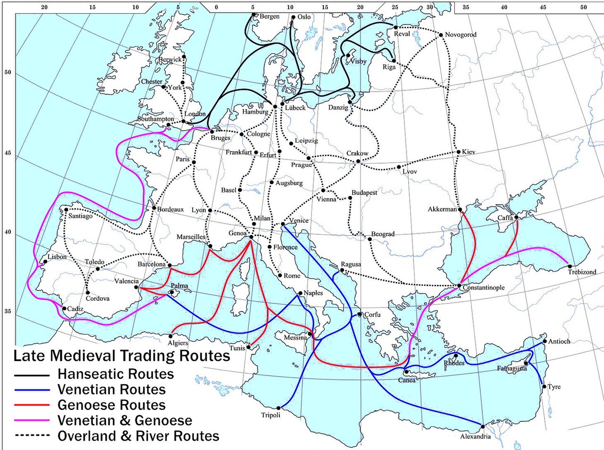
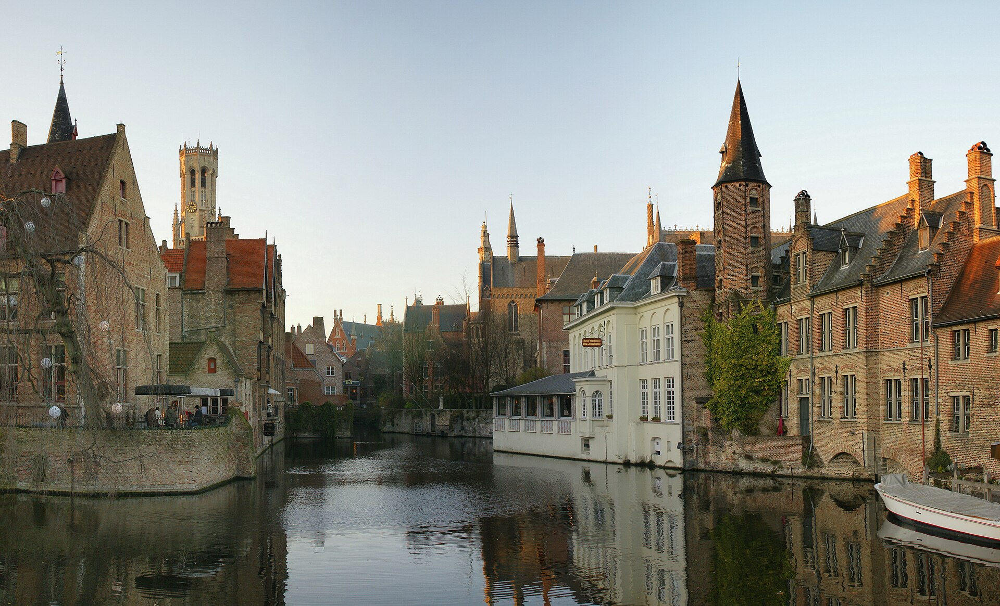
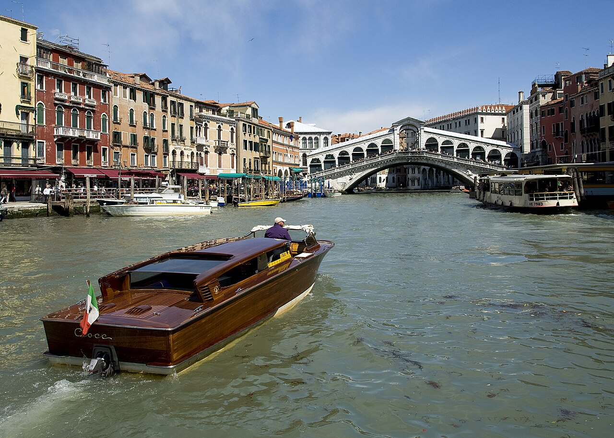
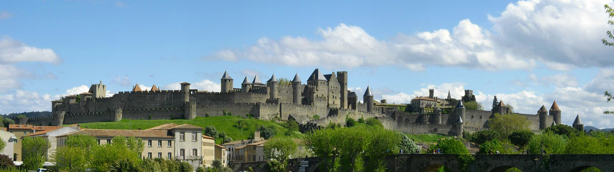
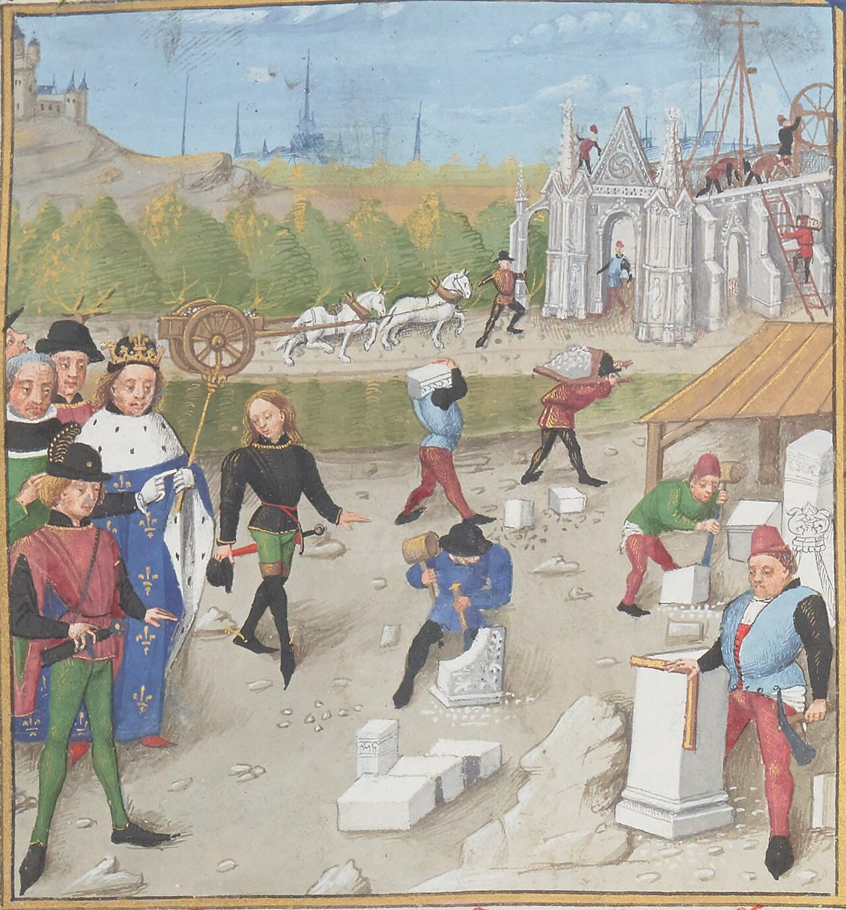
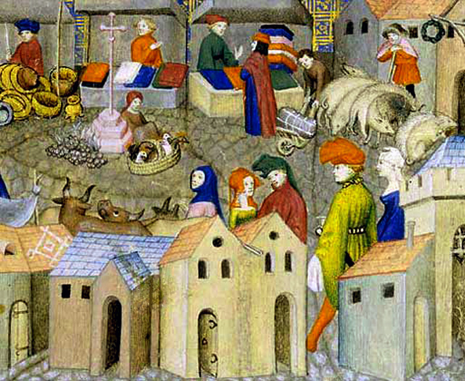
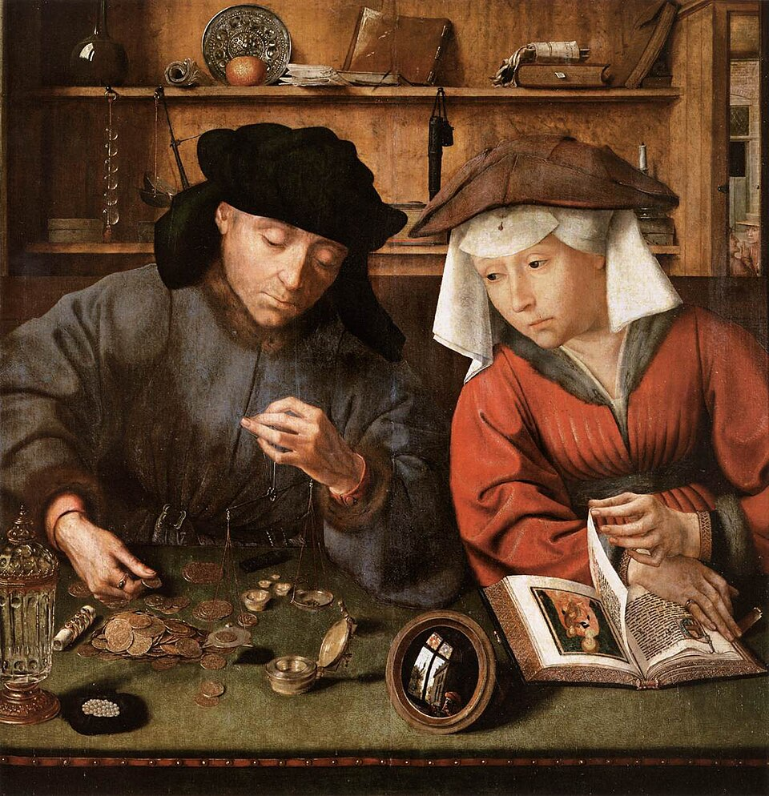
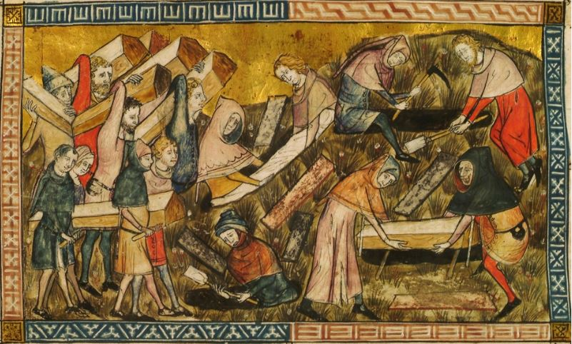

Histoire et éducation à la citoyenneté
06 / 12 réalité sociales
L'essor urbain et commercial
XIe au XIVe siècle · La renaissance des villes
- bourg
- bourgeoisie
- capital
- charte
- droit
- Grand commerce
- hiérarchie sociale
- institution
- urbanisation

Mise en contexte
Avec l'essor du commerce et de l'urbanisation au Moyen Âge, la bourgeoisie se développe. L'émergence de ce groupe social, qui s'impose progressivement dans la hiérarchie sociale, est un des facteurs conduisant à la fin du Moyen Âge. Elle annonce également la remise en cause d'un ordre social fondé sur la tradition.

Source
Nicole Oresme, translation of Aristotle's Ethics, Politics, and Economics , Rouen (France), Bibliothèque Municipale, Ms. 927, fol. 145, Medieval market, Wikimedia Commons. Licence : Domaine public.
Source
Ambrogio Lorenzetti, Ambrogio Lorenzetti - Effects of Good Government in the city - Google Art Project, Wikimedia Commons. Licence : Domaine public.Concepts à l'étude
- Bourg : une petite ville, souvent née autour d'un château ou d'un monastère, où se tient le marché des villages environnants.
- Bourgeoisie : le groupe social des habitants des bourgs, marchands, banquiers et maîtres artisans, qui s'enrichit grâce au commerce.
- Capital : l'argent et les biens accumulés qu'on peut investir pour faire du commerce et s'enrichir davantage.
- Charte : une entente écrite, négociée avec le seigneur, qui accorde des droits et des libertés aux habitants d'un bourg.
- Droit : ce qu'une personne est autorisée à faire ou à exiger, comme tenir un marché ou élire des dirigeants.
- Grand commerce : les échanges de marchandises à grande distance, entre l'Europe, l'Asie et l'Afrique, par les foires, les routes et les mers.
- Hiérarchie sociale : le classement des groupes d'une société, du plus puissant au plus démuni.
- Institution : une organisation durable qui encadre la vie en société, comme une corporation ou une administration de bourg.
- Urbanisation : la croissance des villes et l'augmentation de la part de la population qui y vit.
Situer dans le temps et dans l'espace
Des royaumes stables
Alors que le Haut Moyen Âge (environ 500 à 1000) fut relativement sanglant et empreint de nombreux conflits, le Moyen Âge central (environ 1000 à 1300) est plus paisible. En effet, les paysans améliorent les techniques agricoles, les royaumes européens se stabilisent, le commerce se développe dans les bourgs et un nouvel ordre social émerge.
Les villes médiévales que sont Bruges, Hambourg, Londres, Venise et Florence sont dorénavant au coeur du développement du Grand commerce. En effet, des foires médiévales s'y organisent tout au long des 11e, 12e, 13e et 14e siècles. Leur situation stratégique, à proximité de la mer Méditerranée, de la mer du Nord, de la mer Noire ou d'un passage maritime tel que la Manche, incite les marchands à s'y réunir. Notons finalement que le harnais et les fers à cheval favorisent le déplacement en charrette, ce qui facilite le transport par les voies terrestres.
Les routes du Grand commerce

Source
Lampman, Late Medieval Trade Routes, Wikimedia Commons. Licence : Domaine public.La carte montre les grandes routes commerciales de la fin du Moyen Âge. Pour la lire :
- en noir, les routes de la Hanse relient les ports de la mer du Nord et de la mer Baltique, dont Bruges, Londres et Hambourg;
- en bleu et en rouge, les routes maritimes de Venise et de Gênes sillonnent la Méditerranée et rejoignent la mer Noire;
- en pointillé, les routes terrestres et les fleuves traversent le continent : c'est à leur croisement, comme en Champagne, que se tiennent les grandes foires.
La ligne du temps
Le développement urbain et commercial
Le schéma suivant donne la vue d'ensemble : deux causes mènent à l'essor des bourgs et du commerce, qui entraîne à son tour trois grandes conséquences. Les sections qui suivent expliquent chacun de ces éléments.
Les causes
Deux grandes causes expliquent l'essor des bourgs : la Paix de Dieu et l'amélioration des techniques agricoles.
La Paix de Dieu
La Paix de Dieu est un mouvement lancé par l'Église qui, vers l'an 1000, encourage seigneurs et chevaliers à observer des moments de paix et des actions non violentes envers les paysans. Elle vise trois grands objectifs :
Protéger les biens de l'Église Les possessions ecclésiastiques, dont le nombre s'accroît grâce à des donateurs nombreux soucieux d'assurer le salut de leur âme après la mort.
Protéger les plus vulnérables Ceux qui ne peuvent pas se défendre : les religieux (qui n'ont pas le droit de tuer), les paysans (qui ne savent pas manier les armes) et les pèlerins (qui réalisent des voyages spirituels).
Protéger les ressources Il est interdit de s'attaquer au bétail, aux moulins et aux animaux de labour, sous peine d'excommunication (l'exclusion de l'Église).
L'amélioration des techniques agricoles
L'agriculture se développe grandement au Moyen Âge, notamment en raison de l'amélioration des moulins à eau et à vent, de l'assolement (rotation des cultures) et du perfectionnement des outils agricoles. Le développement de la métallurgie y est pour beaucoup dans ce dernier.
Le moulin à vent. Le moulin sert à moudre le grain. Tout le blé récolté dans un domaine ou une seigneurie doit y être amené et moulu contre le droit de banalité, reversé au maître de l'eau (dans le cas d'un moulin à eau), au seigneur et au meunier.
L'assolement triennal. L'assolement triennal correspond à la division de la terre cultivée en trois soles : une sole de céréale d'hiver (majoritairement du blé), une sole de céréale de printemps (orge, avoine) ou de légumineuse et une sole de jachère. (Source : Wikipédia)
Le collier d'épaule. Le collier d'épaule est un harnais rigide qui fait reposer l'effort de traction sur les épaules du cheval plutôt que sur son cou. L'animal ne s'étouffe plus en tirant : il peut déplacer des charges beaucoup plus lourdes, ce qui rend le labour et le transport bien plus efficaces.
La charrue. La charrue est un instrument aratoire utilisé en agriculture pour labourer les champs. Elle s'est plus largement répandue en Europe lors de la révolution agricole du Moyen Âge, où son utilisation, conjointement à celle du fumier, a permis d'augmenter la productivité agricole. (Source : Wikipédia)
Les conséquences
L'essor agricole entraîne trois grandes conséquences : l'apparition de la bourgeoisie marchande, les migrations urbaines et la mise en place des chartes.
La bourgeoisie marchande
Grâce à l'amélioration des techniques agricoles, une nouvelle classe sociale émerge : la bourgeoisie marchande. En effet, les paysans qui réalisent d'importants surplus agricoles se rendent dans les bourgs (où se tient ordinairement le marché des villages environnants) afin d'y vendre leurs récoltes. Ils peuvent donc s'enrichir et ainsi émerge la bourgeoisie marchande.
Les migrations urbaines
Durant la période 1000-1300, de nombreux paysans décident de quitter la campagne pour le bourg. En effet, ceux-ci souhaitent obtenir les privilèges inscrits dans la charte de franchises mise en place par un seigneur ou simplement devenir artisans. Il s'agit d'un moyen, pour les seigneurs, de développer leur bourg en attirant toujours plus d'artisans et de marchands.
Les chartes
Les chartes sont négociées entre le seigneur et la bourgeoisie marchande, qui s'enrichit de plus en plus. Elles lui permettent de se libérer de ses obligations envers les seigneurs (corvées, cens, etc.) et de commercer plus librement. Dorénavant, les seigneurs ne peuvent plus imposer des obligations au gré de leurs émotions et doivent s'occuper de l'administration du bourg.
Le bourg médiéval
Le bourg médiéval obtient progressivement un statut spécial qui donne aux habitants plus d'autonomie et certains droits :
- élire des dirigeants;
- tenir un marché ou une foire commerciale;
- maintenir l'ordre et rendre la justice;
- percevoir des taxes municipales pour l'entretien et la défense du bourg.
Les habitants, aussi appelés bourgeois, sont donc plus directement impliqués dans le développement économique et social de leur milieu de vie. Notons, finalement, que le bourg est toujours construit autour d'un château ou d'un monastère.
Quelques bourgs médiévaux
Bruges. Le bourg de Bruges est reconnu pour son port de mer protégé et extrêmement dynamique. C'est l'un des ports les plus importants de toute l'Europe chrétienne. Cette ville belge comporte un large secteur protégé par le patrimoine mondial de l'UNESCO.
Venise. Venise contrôle une très grande partie du commerce sur la Méditerranée. Ses marchands s'enrichissent rapidement car ceux-ci bénéficient d'ententes favorables avec certains fournisseurs musulmans du Moyen-Orient.
Carcassonne. Carcassonne est une ville importante pour le commerce terrestre vers la Méditerranée. Ce bourg fortifié demeure l'un des joyaux patrimoniaux du Moyen Âge.
Dubrovnik. Dubrovnik est un bourg de l'Empire byzantin ouvert sur la mer Adriatique, longtemps rival commercial de Venise. C'est un site patrimonial de la Croatie très visité aujourd'hui.
(Source des quatre présentations : document de Jérôme Lebel)

Source
Hans Hillewaert, Rozenhoedkaai Brugge, Wikimedia Commons. Licence : Creative Commons BY-SA 3.0.
Source
Saffron Blaze, Rialto Bridge Grand Canal, Wikimedia Commons. Licence : Creative Commons BY-SA 3.0.
Source
Jondu11, Cité de Carcassonne, Wikimedia Commons. Licence : Creative Commons BY-SA 4.0.
Source
Francesco Bandarin, Old City of Dubrovnik-108773, Wikimedia Commons. Licence : CC BY-SA 3.0 igo.Les problèmes urbains
Bien que les représentations iconographiques du Moyen Âge (peintures, gravures, tapisseries) dépeignent les rues des villes comme luisantes de propreté, la réalité était plus catastrophique. De nombreux écrits mentionnent la saleté des rues, ne serait-ce qu'en évoquant les toponymes (les noms qu'on leur donne) : rue Cave, Trou Punais, la Sale, Foireuse, Basse-Fesse, du Bourbier, etc. Un document de 1412 mentionne une place Marcadal (quartier fangeux) et des fossés nauséabonds à Lourdes.
Les rues sont polluées par les nuisances de chantiers, les ateliers débordent sur la chaussée, les habitants y jettent leurs seaux d'urine et d'excréments, certains défèquent dans la rue; les ouvroirs des particuliers et les eaux stagnantes des pluies créent des terreaux d'immondices. Circuler dans la rue représente un réel danger et une expérience désagréable, entre les boues, les eaux et les saletés qui envahissent la chaussée et la circulation d'animaux (cochons, volailles, chevaux, chiens errants, etc.) et de marchands ambulants.
(Source : Wikipédia)
La hiérarchie sociale dans les bourgs
Il existe, dans les bourgs, différentes classes sociales. Du sommet à la base de la hiérarchie :
- la noblesse : le roi, les ducs et les duchesses, les comtes et les comtesses, les barons et les baronnes ainsi que les seigneurs;
- le clergé : l'archevêque, les évêques, les prêtres, les moines, les soeurs, etc.;
- la bourgeoisie marchande : les grands et les petits marchands, les banquiers, les membres de guildes, les maîtres artisans, etc. Cette classe sociale émerge durant le Bas Moyen Âge;
- le peuple : les petits artisans, les paysans, les commerçants, etc.;
- les esclaves, présents dans quelques bourgs seulement.
Le Grand commerce
Le développement des corporations

Source
Robinet Testard, Dagobert visitant le chantier de la construction de Saint-Denis, Wikimedia Commons. Licence : Domaine public.Dans les bourgs et villes du Moyen Âge, après l'an 1000, les artisans s'organisent sous forme d'associations professionnelles. Ces associations prennent, selon le lieu, le nom de guilde, de hanse ou de corporation. Ces associations organisent l'entraide et punissent ceux qui voudraient casser les prix ou dénaturer les pratiques professionnelles. Elles sont hiérarchisées, avec des maîtres, des compagnons et, à la base, des apprentis. On utilise encore ces termes dans certains métiers au Québec. Chaque corporation a pour mandat de standardiser la procédure et la durée de la formation nécessaire avant d'obtenir le titre d'artisan. Également, les corporations :
- fixent les prix des marchandises;
- assurent la protection de leurs membres;
- sécurisent le transport de caravanes avec des soldats qui protègent la marchandise sur les routes remplies de brigands.
Les artisans médiévaux
Le tisserand. Le tisserand est un artisan qui fabrique des tissus. Il utilise pour cela un métier à tisser ou parfois des aiguilles. Ses matières premières sont le coton, la laine, le lin, le chanvre et la soie. Une fois que le fil est créé, il passe au foulage : il se fait tremper, piétiner dans l'eau pour améliorer sa qualité puis étirer, sécher et enfin, on le tend. Les tisserands créent dans leurs ateliers des vêtements, des tapisseries et des draps. Beaucoup de tailleurs et de rois achètent leurs produits. Les tissus sont ensuite teintés chez un teinturier. Un tisserand doit commencer son travail après le lever du soleil sous peine d'une amende, et il devait aussi payer des taxes. (Source : Wikipédia)
Le maçon. Le maçon a pour charge essentielle de monter les murs, c'est-à-dire d'asseoir la pierre, de la poser, de la coucher et enfin de la cimenter. Mais dans les textes du Moyen Âge, la confusion n'est pas rare entre les termes désignant le maçon et le tailleur de pierre, car leurs tâches sont assez semblables et la polyvalence des bâtisseurs fréquente sur les chantiers. En revanche, le maçon dit « supérieur », qui sait tailler la pierre, est nettement différencié du « maçon de moindre importance » dont les compétences se limitent à la pose des pierres sur les chantiers. Parfois, les maçons les plus fortunés endossent le rôle d'entrepreneur et dirigent à forfait de petits chantiers. (Source : Bibliothèque nationale de France, 2015)
Le couvreur. En tant que corporation, le métier de couvreur apparaît assez tardivement. En effet, pendant l'Antiquité et le Moyen Âge, une bonne partie des toitures sont faites de planches de bois ou de bardeaux. Une partie du métier reste donc fortement liée à celui des charpentiers, tandis que l'autre partie, qui réalise des couvertures recouvertes de feuilles de plomb, se confond avec les « plombiers ». À partir du 13e siècle, on distingue, pour la première fois, les « couvreurs » (qui assurent les travaux neufs) des « recouvreurs » (qui réparent). Mais les couvreurs demeurent sous l'autorité du charpentier royal. Comme dans tous les métiers liés à la charpenterie, le nombre d'apprentis est limité à un seul et l'apprentissage dure six ans. (Source : Bibliothèque nationale de France, 2015)
L'organisation du Grand commerce

Source
Workshop of Master of the City of Ladies, Scène de foire - ca 1400 - BNF Fr12559 f167, Wikimedia Commons. Licence : Domaine public.Le Grand commerce, au Moyen Âge, est rendu possible grâce à plusieurs facteurs. Tout d'abord, les croisades ont permis le développement durable de routes commerciales entre l'Orient, l'Afrique et l'Europe. Le goût pour les produits de luxe (soieries, épices et pierres précieuses) ne s'en trouve que renforcé. Venise devient alors un pôle économique très important pour toute la région méditerranéenne. Son port devient l'un des plus importants en Europe. Le bourg de Danzig connaît un développement semblable, grâce à son emplacement stratégique, à proximité de la mer Baltique et de la mer du Nord. (Source : Alloprof)
Entre ces deux pôles commerciaux se développe un grand réseau de foires commerciales. Elles se tiennent à des endroits et à des dates fixés. Elles sont réglementées et organisées. Les marchands s'y rendent ainsi afin de vendre leurs différents produits. Les nobles profitent grandement des foires afin d'acquérir des produits luxueux issus des quatre coins du continent européen, mais aussi de l'Asie et de l'Afrique.
Les foires de Champagne étaient parmi les plus courues. Leur succès résulte de leur situation géographique, entre les Flandres et l'Italie au croisement de nombreuses routes et voies navigables, de la gestion éclairée des comtes de Champagne et de la sécurité particulière dont bénéficiaient les marchands, garantie par les comtes de Champagne eux-mêmes. (Source : Wikipédia)
Le changeur et la lettre de change

Source
Quinten Metsys, Quinten Massijs (I) - The Moneylender and his Wife - WGA14281, Wikimedia Commons. Licence : Domaine public.Le développement du Grand commerce à travers l'Europe au Moyen Âge crée un problème relativement important : celui des nombreuses monnaies. En effet, de nombreuses monnaies sont en circulation à travers l'Europe et celles-ci n'ont pas toutes la même valeur. Certains métiers, tels le changeur et le banquier, deviennent ainsi nécessaires pour faciliter le Grand commerce.
Qu'est-ce qu'un changeur? Un changeur est une personne qui effectue des opérations de change consistant en un échange de pièces de monnaie ou de devises d'un pays contre celles d'un autre. Ce commerce est généralement considéré comme l'origine de la banque moderne en Europe.
Qu'est-ce qu'une lettre de change? Un document écrit par une personne (le tireur) à une autre personne (le tiré) lui demandant de payer un montant d'argent déterminé à une troisième personne (le bénéficiaire). La lettre de change est, pour ainsi dire, l'ancêtre du chèque.
La peste noire

Source
Pierart dou Tielt (fl. 1340-1360), Doutielt3, Wikimedia Commons. Licence : Domaine public.De 1347 à 1352, la peste noire venue d'Asie a décimé près de la moitié de la population européenne. Des millions de personnes, des riches comme des pauvres, ont péri à la suite d'affreuses souffrances, de la Russie jusqu'à l'Afrique du Nord. L'épidémie, désastreuse à tous les points de vue, a bouleversé le portrait démographique et économique du continent.
Arrivée par les routes du commerce
La peste voyage sur les mêmes routes que les marchandises. Partie d'Asie centrale, elle suit les caravanes jusqu'aux ports de la mer Noire. En 1347, des navires marchands génois venus de Caffa accostent à Messine, en Sicile, avec des équipages déjà malades : en quelques mois, l'épidémie gagne les grands ports de la Méditerranée, puis remonte les routes commerciales vers l'intérieur du continent. Les mêmes réseaux qui enrichissent l'Europe transportent ainsi la maladie.
Le Grand commerce, puis la peste noire
Choisis un produit, une ville ou suis la peste
- Route de mer
- Route de terre ou fleuve
- Ville marchande
- Foire
- Origine d'un produit
- Ville touchée et date
- Pas encore touchée
- Chemin probable de la peste
- 500 km
Deux grands réseaux de commerce
Au sud, les marchands de Venise et de Gênes dominent la Méditerranée et la mer Noire. Ils rapportent d'Orient les épices et la soie.
Au nord, les villes marchandes allemandes de la Hanse relient la mer du Nord et la mer Baltique. Elles font circuler la laine, les draps, le blé, les fourrures et le poisson.
Entre les deux, on se rencontre aux foires de Champagne. À partir de 1277, les navires italiens vont aussi jusqu'à Bruges par la mer.
- Choisis un produit pour voir son chemin.
- Choisis une ville pour découvrir son rôle.
- Suis la peste noire, qui emprunte ces mêmes routes de 1346 à 1353.
Le savais-tu? La Hanse possède quatre grands comptoirs à l'étranger : à Londres, à Bruges, à Bergen et à Novgorod. Les marchands allemands y vivent dans leur propre quartier, selon leurs propres règles.
Les épices
D'où viennent-elles?Le poivre, la cannelle et le gingembre poussent en Inde et en Asie du Sud-Est. Ils arrivent en Égypte par la mer Rouge. Les marchands de Venise et de Gênes les achètent à Alexandrie.
À quoi servent-elles?Très chères, elles donnent du goût aux plats des riches, qui montrent ainsi leur fortune. On s'en sert aussi comme médicament.
Leur chemin- Le Caire
- Messine
Le savais-tu? Contrairement à une idée répandue, les épices ne servent pas à conserver la viande. Pour cela, on la sale, on la sèche ou on la fume.
La soie
D'où vient-elle?La soie vient de Chine et de Perse. Les caravanes l'apportent jusqu'aux ports de la mer Noire, comme Tana et Caffa. Des navires italiens l'emportent ensuite vers Constantinople, Venise et Gênes.
À quoi sert-elle?Ce tissu doux et brillant sert à faire les vêtements des rois, des nobles et des riches bourgeois.
Son chemin- Messine
Le savais-tu? La Chine, qui a inventé la soie, en a longtemps gardé le secret.
Les draps de laine
D'où viennent-ils?Les drapiers de Flandre, à Gand, à Ypres et à Bruges, tissent des draps de laine réputés dans toute l'Europe. Ils utilisent surtout la laine d'Angleterre.
À quoi servent-ils?Ces tissus épais et chauds servent à faire des vêtements. Les Italiens les achètent aux foires de Champagne. Les marchands de la Hanse les vendent jusqu'à Novgorod.
Leur cheminLe savais-tu? À Novgorod, les marchands de la Hanse échangent les draps de Flandre contre des fourrures et de la cire.
La laine anglaise
D'où vient-elle?L'Angleterre élève d'immenses troupeaux de moutons. Elle vend sa laine surtout aux drapiers de Flandre et d'Italie.
À quoi sert-elle?Filée, puis tissée, la laine devient du drap. Les ateliers de Flandre et de Florence en dépendent beaucoup.
Son chemin- Pise
Le savais-tu? Au 14e siècle, le roi Édouard III d'Angleterre décide que son chancelier siégera sur un ballot de laine, pour rappeler l'importance de ce commerce. Ce siège, le Woolsack, existe toujours au Parlement britannique.
Les fourrures et la cire
D'où viennent-elles?Les forêts du nord de la Russie abritent des écureuils, des martres et des zibelines. Les marchands de la Hanse achètent leurs fourrures à Novgorod, avec de la cire d'abeille.
À quoi servent-elles?Les fourrures doublent les manteaux des nobles et des riches. La cire sert à fabriquer des chandelles, surtout pour les églises.
Leur cheminLe savais-tu? Au 14e siècle, les marchands de Novgorod sont les principaux fournisseurs de fourrures d'écureuil de l'Europe de l'Ouest.
Le poisson séché et salé
D'où vient-il?Le hareng est pêché en grande quantité près de la Scanie, au sud de la Suède actuelle, puis salé sur place. La morue est séchée au vent dans le nord de la Norvège, puis vendue à Bergen.
À quoi sert-il?L'Église interdit de manger de la viande pendant le carême et le vendredi. Ces jours-là, on mange du poisson. Séché ou salé, il se conserve longtemps et voyage loin.
Son cheminLe savais-tu? La morue séchée, le stockfisch, se conserve plusieurs années. Une bonne année, la Scanie exporte jusqu'à 300 000 barils de hareng.
Le blé
D'où vient-il?Les grandes villes ne produisent pas assez de nourriture. Le blé arrive de la Prusse par le port de Danzig. Il vient aussi des plaines de la mer Noire, par Tana et Caffa.
À quoi sert-il?Le blé sert à faire le pain, la base de l'alimentation. Les navires qui le transportent rapportent aussi du bois, utile pour construire des maisons et des navires.
Son cheminLe savais-tu? Selon l'historienne Hannah Barker, la peste serait arrivée en Italie avec le blé chargé à Tana en 1347. Les rats et leurs puces auraient voyagé dans les cales.
La ville des épices et des galères
Venise est une république de marchands. Ses galères vont chercher les épices à Alexandrie et la soie à Constantinople. Depuis 1228, les marchands allemands ont leur entrepôt près du pont du Rialto : le Fondaco dei Tedeschi. Ils y achètent les produits d'Orient, puis les emportent au nord des Alpes. À partir de 1314, les galères de Venise vont même jusqu'à Bruges par la mer.
Produits échangés iciLa peste noire : elle frappe Venise au début de 1348.
Aujourd'hui : Venise, en Italie. La ville et sa lagune sont inscrites au patrimoine mondial de l'UNESCO.
La grande rivale de Venise
Les marchands de Gênes possèdent des comptoirs autour de la mer Noire, comme Caffa. Ils ont même un quartier face à Constantinople : Péra. En 1277, une flotte de Gênes atteint Bruges par la mer pour la première fois. Elle passe par le détroit de Gibraltar. Cette nouvelle route fait concurrence aux foires de Champagne.
Produits échangés iciLa peste noire : elle frappe Gênes à la fin de 1347.
Aujourd'hui : Gênes, grand port du nord-ouest de l'Italie.
La ville des banquiers
Florence tisse de beaux draps de laine, souvent avec de la laine d'Angleterre. Ses banquiers, comme les familles Bardi et Peruzzi, prêtent de l'argent aux marchands et aux rois. En 1252, la ville frappe une pièce d'or, le florin. Elle est acceptée partout en Europe.
Produits échangés iciLa peste noire : elle frappe Florence en mars 1348.
Aujourd'hui : Florence, en Italie. Son centre historique est inscrit au patrimoine mondial de l'UNESCO.
La porte de la mer Noire
Capitale de l'Empire byzantin, Constantinople garde le Bosphore, le passage entre la mer Noire et la Méditerranée. Les Génois ont leur quartier de l'autre côté de la Corne d'Or : Péra. Tous les navires qui vont vers Caffa et Tana passent devant la ville.
Produits échangés iciLa peste noire : elle frappe Constantinople en mai 1347.
Aujourd'hui : Istanbul, la plus grande ville de Turquie.
Le comptoir génois de Crimée
En 1266, des marchands de Gênes obtiennent ce port de Crimée du khan mongol. Caffa devient un grand marché de la mer Noire. On y vend le blé des plaines voisines et la soie venue d'Asie.
Produits échangés iciLa peste noire : elle frappe Caffa à l'automne 1346.
Aujourd'hui : Féodossia, une ville de Crimée, au bord de la mer Noire.
Le départ de la route vers la Chine
Tana se trouve à l'embouchure du fleuve Don. Vénitiens, Génois, Arméniens et marchands d'Asie centrale s'y installent avec l'accord du khan mongol. Au 14e siècle, c'est une étape importante de la route mongole vers la Chine. Vers 1340, Pegolotti, un employé d'une banque de Florence, écrit un guide pour les marchands. Il y décrit la route qui va de Tana jusqu'à Pékin.
Produits échangés iciLa peste noire : elle frappe Tana en 1346.
Aujourd'hui : Azov, en Russie, près de l'embouchure du Don.
Le grand port des épices
Les épices de l'Inde arrivent en Égypte par la mer Rouge. Elles gagnent ensuite Le Caire, puis descendent le Nil jusqu'à Alexandrie. Les Vénitiens y ont des entrepôts, les fondaci, depuis le 13e siècle. Les Génois viennent aussi y acheter les épices.
Produits échangés iciLa peste noire : elle frappe Alexandrie à l'automne 1347.
Aujourd'hui : Alexandrie, deuxième ville d'Égypte, au bord de la Méditerranée.
Le grand marché du Nord
Bruges est le plus grand marché du nord-ouest de l'Europe. Des marchands italiens, anglais et allemands de la Hanse y ont leurs maisons. On y vend les draps de Flandre et la laine d'Angleterre. Les navires y arrivent par un bras de mer, le Zwin. Au 14e siècle, marchands et banquiers font leurs affaires devant la maison Ter Beurse : c'est de là que viendrait le mot « bourse ».
Produits échangés iciAujourd'hui : Bruges, en Belgique. Son centre historique est inscrit au patrimoine mondial de l'UNESCO.
Le grand rendez-vous des marchands
Chaque année, six foires se succèdent dans quatre villes de Champagne : deux à Troyes, deux à Provins, une à Lagny et une à Bar-sur-Aube. Chacune dure plusieurs semaines. Les Italiens y vendent la soie et les épices. Les Flamands y vendent leurs draps. En 1137, le comte de Champagne accorde sa protection aux marchands qui viennent aux foires. Les foires connaissent leur plus grand succès au 13e siècle.
Produits échangés iciAujourd'hui : Provins, en France. Cette ville de foire médiévale est inscrite au patrimoine mondial de l'UNESCO.
Le pays de la laine
L'Angleterre produit beaucoup de laine de grande qualité. Elle la vend surtout aux drapiers de Flandre et d'Italie. Les marchands de la Hanse ont à Londres leur propre comptoir, au bord de la Tamise. Le vin arrive de Bordeaux, qui appartient alors au roi d'Angleterre.
Produits échangés iciLa peste noire : elle frappe Londres à l'automne 1348.
Aujourd'hui : Londres, capitale du Royaume-Uni.
Le port du vin
Depuis le 12e siècle, Bordeaux et la Gascogne appartiennent au roi d'Angleterre. Pendant des siècles, des navires chargés de vin quittent son port pour l'Angleterre.
La peste noire : elle frappe Bordeaux en juin 1348.
Aujourd'hui : Bordeaux, en France. Son port de la Lune est inscrit au patrimoine mondial de l'UNESCO.
La reine de la Hanse
La Hanse est une association de villes marchandes allemandes. Lübeck en est la ville la plus importante. Ses navires, les cogues, parcourent la mer Baltique. En 1241, Lübeck s'allie à Hambourg, un port de la mer du Nord. Une route de terre relie les deux villes : c'est le principal lien entre la mer Baltique et la mer du Nord. Le sel de Lunebourg passe aussi par Lübeck : il sert à saler le hareng.
Produits échangés iciLa peste noire : elle frappe Lübeck en 1350.
Aujourd'hui : Lübeck, en Allemagne. Sa vieille ville est inscrite au patrimoine mondial de l'UNESCO.
La porte de la mer du Nord
Hambourg est un port sur l'Elbe, tout près de la mer du Nord. Alliée à Lübeck depuis 1241, elle reçoit les marchandises de la mer Baltique par la route de terre. Ses navires les emportent ensuite vers la Flandre et l'Angleterre.
Produits échangés iciLa peste noire : elle frappe Hambourg en 1350.
Aujourd'hui : Hambourg, deuxième ville d'Allemagne.
Le blé et le bois de la Prusse
Danzig est un port de la Prusse, à l'embouchure de la Vistule. On y charge le bois des forêts et le blé des plaines. Les navires de la Hanse les emportent jusqu'en Flandre et en Angleterre.
Produits échangés iciAujourd'hui : Gdańsk, en Pologne.
La ville de la morue séchée
Bergen, en Norvège, vend la morue séchée au vent dans le nord du pays. Les marchands de la Hanse l'échangent contre du blé. Vers 1350, ils ouvrent un comptoir sur le quai de la ville, Bryggen.
Produits échangés iciLa peste noire : elle frappe Bergen à l'été 1349.
Aujourd'hui : Bergen, en Norvège. Les maisons de bois de Bryggen sont inscrites au patrimoine mondial de l'UNESCO.
Le marché des fourrures
Novgorod est une grande ville marchande du nord de la Russie. Les marchands de la Hanse y ont leur comptoir depuis 1200 environ : la cour Saint-Pierre. Ils y achètent des fourrures et de la cire. Ils y vendent des draps de Flandre, du hareng et du sel.
Produits échangés iciLa peste noire : elle frappe Novgorod à la fin de 1351.
Aujourd'hui : Veliki Novgorod, en Russie. Ses monuments anciens sont inscrits au patrimoine mondial de l'UNESCO.
La peste arrive au bord de la mer Noire
- Tana1346
- Caffaautomne 1346
Au printemps 1346, la peste éclate dans les steppes au nord de la mer Caspienne. Ces terres appartiennent à la Horde d'or, un État mongol.
La maladie gagne Tana. À l'automne, elle frappe l'armée mongole qui assiège Caffa, le comptoir génois de Crimée.
Le savais-tu? Un notaire italien, Gabriele de Mussi, raconte que les Mongols auraient lancé des cadavres de malades dans Caffa. Des historiens pensent plutôt que la peste a voyagé avec les rats et leurs puces, dans les cargaisons de blé.
Constantinople, première ville d'Europe touchée
- Constantinoplemai 1347
En mai 1347, des navires italiens venus de la mer Noire font escale à Constantinople. À bord, des rats sont porteurs de puces infectées.
Au début de l'été, la peste éclate dans la ville. C'est la première ville d'Europe à être frappée.
Le savais-tu? La peste se transmet surtout par les puces des rats noirs, nombreux sur les navires et dans les villes.
La peste se répand dans la Méditerranée
- Messineoct. 1347
- Alexandrieautomne 1347
- Marseillenov. 1347
- Gênesfin 1347
En octobre 1347, douze galères génoises entrent dans le port de Messine, en Sicile. Leurs marins sont malades.
La même saison, un navire venu de Constantinople apporte la peste à Alexandrie, en Égypte. En novembre, elle débarque à Marseille. À la fin de l'année, elle atteint Gênes.
De port en port, puis vers l'intérieur
- Avignonjanv. 1348
- Pisejanv. 1348
- Venisedébut 1348
- Florencemars 1348
- Toulouseavril 1348
- Tunisavril 1348
En janvier 1348, la peste remonte le Rhône jusqu'à Avignon, où vit le pape. Elle passe de Gênes à Pise, puis gagne Florence en mars.
Venise est frappée à son tour. En avril, la maladie atteint Toulouse. Des navires partis de Sicile l'apportent aussi à Tunis.
La France, l'Angleterre et l'Égypte
- Bordeauxjuin 1348
- Melcombejuin 1348
- Rouenjuin 1348
- Parisété 1348
- Le Caireété 1348
- Londresautomne 1348
En juin 1348, la peste atteint Bordeaux et Rouen. Un marin venu de Gascogne la débarque à Melcombe, dans le sud de l'Angleterre.
Pendant l'été, elle frappe Paris. À la fin de l'été, elle atteint Le Caire, la capitale de l'Égypte. À l'automne, c'est au tour de Londres.
Le savais-tu? À Paris, la peste tue environ la moitié des habitants, selon les estimations.
Vers le nord de l'Europe
- Vienne1349
- Bergenété 1349
- Tournaiaoût 1349
En 1349, la peste atteint Vienne. En Autriche, entre le quart et le tiers des habitants meurent, selon les estimations.
À l'été, un navire venu d'Angleterre l'apporte à Bergen, en Norvège. En août, elle frappe Tournai, dans l'actuelle Belgique, ainsi que la Prusse.
Le savais-tu? Une miniature célèbre montre les habitants de Tournai qui enterrent les victimes de la peste.
Les ports de la Hanse
- Hambourg1350
- Lübeck1350
En 1350, la peste frappe Hambourg et Lübeck, les grandes villes de la Hanse.
Les ports sont touchés avant les villes de l'intérieur : la maladie voyage par la mer. À Hambourg et à Brême, au moins six habitants sur dix meurent, selon les estimations.
Jusqu'en Russie
- Novgorodfin 1351
- Moscou1353
Les navires de la Hanse la répandent dans les ports de la mer Baltique. À la fin de 1351, elle entre dans le territoire de Novgorod.
En 1352, elle frappe le nord de la Russie. En 1353, elle atteint Moscou. En six ans, elle a fait le tour de l'Europe.
Le bilan de la peste noire
Personne n'a compté les morts. Les historiens font des estimations à partir des registres de l'époque. Elles varient beaucoup.
- 30 à 60 %des Européens meurent
- Environ la moitiédes habitants de Paris
- 40 à 60 %des habitants de l'Angleterre
- Au moins 6 sur 10à Hambourg et à Brême
- Des campagnes videsLes paysans survivants, devenus rares, obtiennent de meilleurs salaires et de meilleures conditions.
- Un commerce ralentiLes foires et les échanges ralentissent un temps, puis l'économie se réorganise.
- On cherche des coupablesDes Juifs sont accusés à tort d'avoir empoisonné les puits. À Strasbourg, en février 1349, la communauté juive est massacrée. Dès 1348, le pape Clément VI condamne ces accusations.
- La quarantaineEn 1377, Raguse oblige les voyageurs venus des régions touchées à attendre 30 jours avant d'entrer. En 1448, Venise porte cette attente à 40 jours : c'est l'origine du mot « quarantaine ».
À ton avis, pourquoi les villes de commerce sont-elles touchées avant les campagnes?
Fond de carte : Natural Earth, domaine public. Dates et estimations : O. J. Benedictow, History Today (2005); Wikipédia (Black Death et articles par pays); H. Barker, résumé par Medievalists.net. Commerce : Encyclopædia Britannica (Hanse); Wikipédia (Foires de Champagne, Bruges, Peterhof, Bryggen, florin, marché de Scanie); Medievalists.net (fourrures de Novgorod). Les chemins de la peste suivent les routes du commerce : ils sont probables, pas certains. Les dates d'arrivée varient d'une source à l'autre.
Une maladie foudroyante
La peste se transmet surtout par les puces des rats noirs, nombreux sur les navires et dans les villes. Le malade est pris de fièvre et voit apparaître des bubons, des ganglions enflés et douloureux; la mort survient souvent en quelques jours. Les bourgs, où l'on vit entassés dans des rues insalubres, sont frappés de plein fouet. Les médecins de l'époque, qui ignorent tout des microbes, sont impuissants : on accuse l'air corrompu, on fuit les villes, on cherche des coupables.
Les conséquences de l'épidémie
En cinq ans, l'Europe perd entre le tiers et la moitié de sa population, soit environ 25 millions de personnes. Les campagnes manquent alors de bras : les paysans survivants, devenus rares et précieux, obtiennent de meilleurs salaires et de meilleures conditions, ce qui affaiblit encore les obligations seigneuriales. Le commerce et les foires ralentissent un temps, puis l'économie se réorganise. La peste noire referme brutalement le Moyen Âge central et annonce les grands bouleversements de la fin du Moyen Âge.
Des applications pour t'exercer
Sources
- Service national du RÉCIT en univers social
- Alloprof, L'essor urbain et commercial
- Wikipédia
- Bibliothèque nationale de France, 2015
- Document de Jérôme Lebel
- O. J. Benedictow, The Black Death: The Greatest Catastrophe Ever, History Today, 2005
- Medievalists.net, How the Black Death reached Europe, d'après Hannah Barker, 2021
- Wikipédia, Peste noire
- Wikipedia, Black Death
- Wikipedia, Black Death in England
- Wikipedia, Quarantine
- Encyclopædia Britannica, Hanseatic League
- Wikipédia, Foires de Champagne
- Wikipedia, Bruges
- Wikipedia, Fondaco dei Tedeschi
- Wikipedia, Bryggen
- Wikipedia, Peterhof (Novgorod)
- Wikipedia, Scania Market
- Wikipedia, Woolsack
- Medievalists.net, The Squirrel Fur Trade in 14th Century Novgorod
- Natural Earth, fonds de carte du domaine public